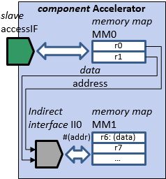
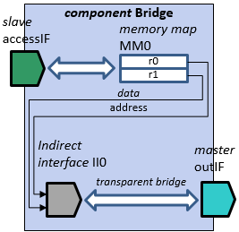

Indirect interfaces editor contains the summary of the indirect interfaces of the component. An indirect interface is used to define access to memory maps that are not directly accessible through a bus interface. This editor can be used to add and remove indirect interfaces to the containing component.
Name is a mandatory identifier for the indirect interface. The name must be unique within all the indirect interface of the containing component.
Display name is an optional and used for a more user-friendly identifier.
Indirect address field is mandatory and defines the bit field used for addressing in the indirect interface.
Indirect data field is mandatory and defines the bit field used for data in read/write operations in the indirect interface.
Memory map defines the indirectly accessible memory map for the indirect interface. If a memory map has been defined, transparent bridges must be left empty.
Transparent bridges define the master bus interface(s) that all transactions through this indirect interface are directed out of. If transparent bridges have been defined, memory map must be left empty. Transparent bridges are shown here, but must be edited in the editor of the respective indirect interface.
Description is an optional field for textual description of the indirect interface.
EXAMPLE 1. The memory map MM0 is accessible through slave bus interface accessIF.
Indirect interface II0 identifies bitfields data and address in registers r0 and
r1 which are used to access memory map MM1. The access to memory map
MM1 occurs at the memory location defined by the content of the address field and
the content of the field data is either written into register r6 in a write operation
or read from r6 into field data in a read operation.

EXAMPLE 2. The memory map MM0 is accessible through slave bus interface accessIF.
Indirect interface II0 identifies bitfields data and address in registers r0 and
r1 which are used to access other components through master bus interface outIF.
